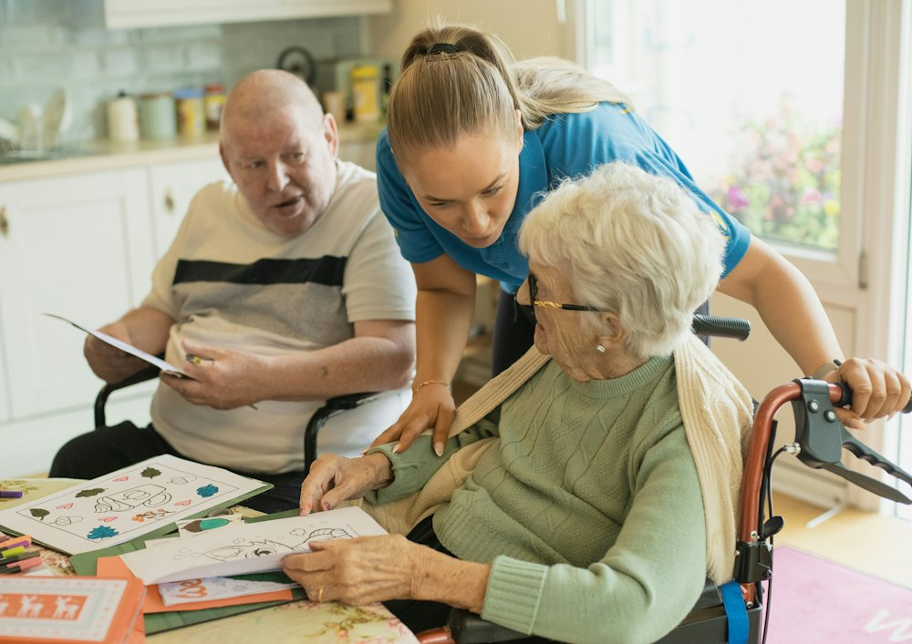
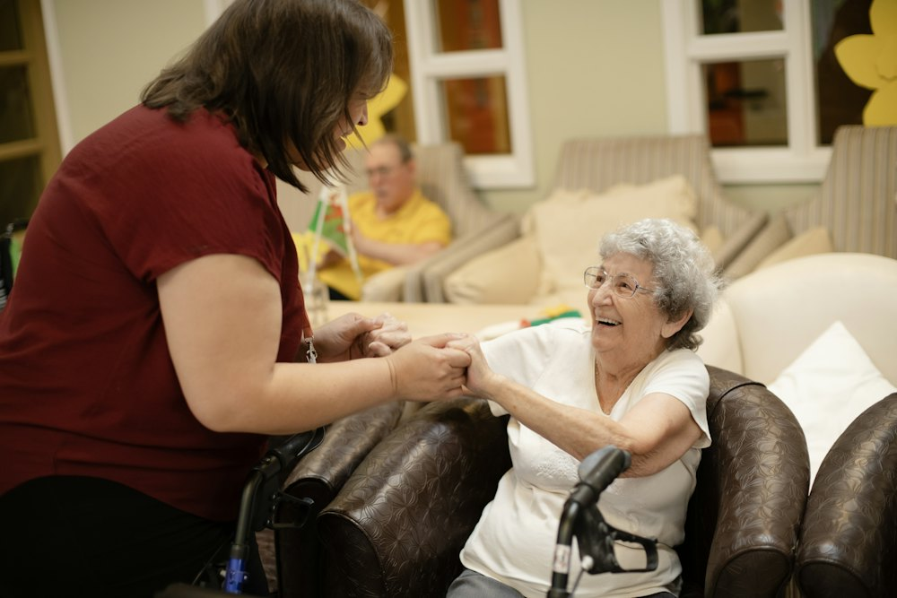

Cuidadores
- Higiene e alimentação
- Locomoção e lembrete de remédios
- Acompanhamento em consultas
Home care em todo o Brasil, com cuidadores, técnicos de enfermagem e equipe multidisciplinar.
Orçamento sem compromisso


Conte o que está acontecendo.
Profissionais e horários certos para o seu caso.
E seguimos acompanhando.
Na primeira conversa indicamos se o melhor é um cuidador, um técnico de enfermagem ou a equipe multidisciplinar.
Varia conforme o tipo de cuidado e a carga horária. O orçamento é pelo WhatsApp, sem compromisso.
Em todo o Brasil. A sede fica em Santo Estevão.